Sentuh LOVEnya!
 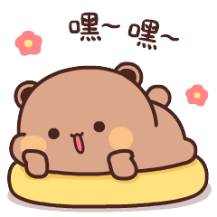
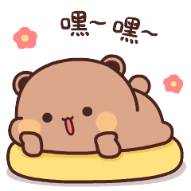
 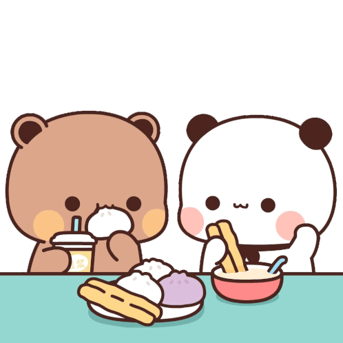
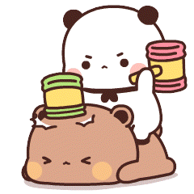
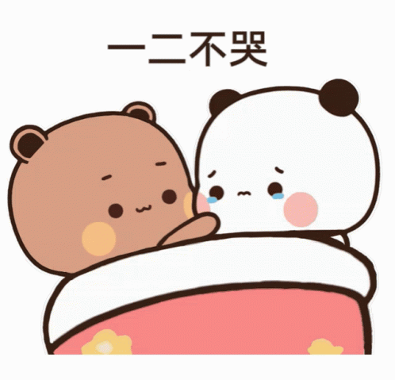
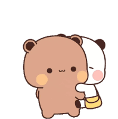
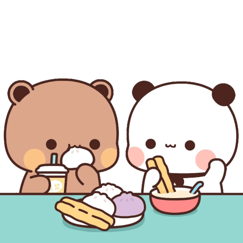
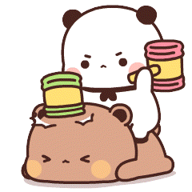
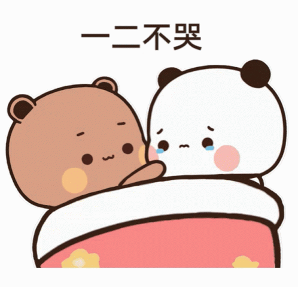
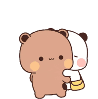
 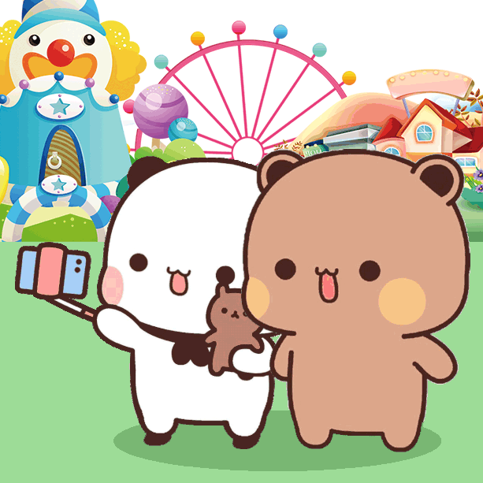
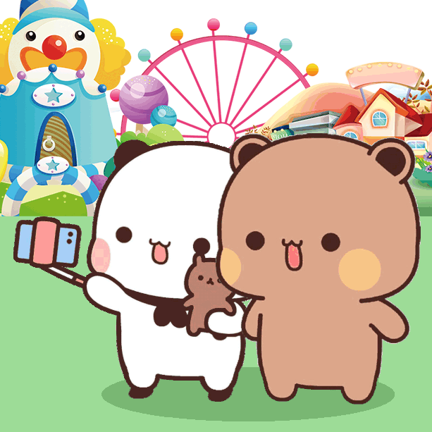


You mean more to me than I could ever express. Every moment we share is something I’ll cherish forever, and I truly appreciate the time we have together.
I know I’m not flawless, but I will always put in the effort to be the best for you. Even when I fall short, my love for you never wavers, and I’ll continue to improve for us.
I’m so grateful for the love you give me. Your patience and understanding have made me realize just how lucky I am to have you.
Having you in my life has made everything feel brighter. I want to be the one who always makes you feel loved, valued, supported, and cared for.
My love for you will never fade, no matter what happens. Through the tough moments and the easy ones, I’ll always be here, giving you my heart completely.
You’ve taught me so much about love, patience, and understanding. I’ve learned to be a better person just by being with you.
Every day, I’m thankful for your presence in my life. I’ll never stop trying to make you smile..
You've brought so much joy into my life, and I want to spend every moment making sure you know how special you are to me.
Through all the ups and downs, I’m here, standing by your side, loving you more every day. You’re my everything, and I’ll keep doing my best to show you that.
I love how just hearing your voice can turn my whole day around. It’s crazy how much comfort you bring me just by being you.
Sometimes I catch myself smiling out of nowhere, and it’s always ‘cause I’m thinking about you.
You’re not just someone I love—you’re my everything. I can talk to you about anything, and that means so much to me.
I love the little things you do. Even the simplest stuff from you feels special, like it matters more ‘cause it’s from you.
I miss you even when we’ve just said goodbye. That’s how much I enjoy every second with you
You make me feel seen in a way no one else ever has. It’s like you get me without me having to explain a thing.
I’m proud of you, always. For the way you keep going, for the way you care, for just being you.
When things get heavy, just know you’re never alone. I’ve got you—always.
Even when I don’t know how to say the right words, my heart’s always full of love for you.
Being with you feels like peace. Like no matter what’s happening around me, I’m safe when I’m with you. I love you Kayeyaa
Klik untuk Geser!
Happy 2nd mensiversary sayang. It might "only" be two months, but it means a lot to me. In this short time, you’ve already made such a big impact in my life. I didn’t expect to meet someone who could bring this much peace and warmth into my everyday. But then you came along—and everything changed. I love how we can be goofy one minute and deep the next. I feel like I can just be myself around you. Thanks for sticking with me, even when I’m not always easy to deal with. You’ve been so patient, so kind, and honestly… just having you around makes everything better.
Thanks for being that person who gets me, who stays even when I’m a mess, who keeps showing up when it’s easier to walk away.